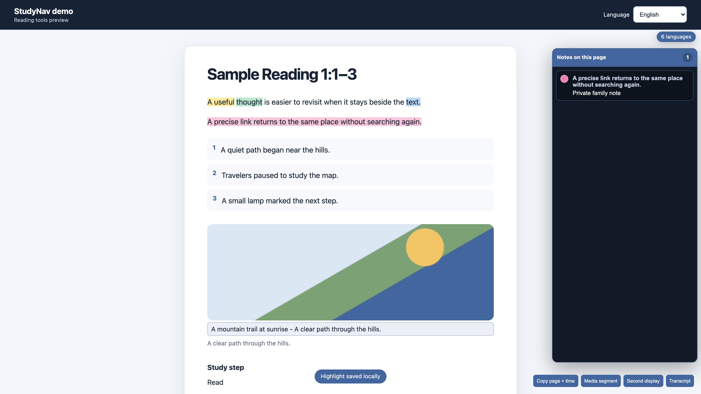
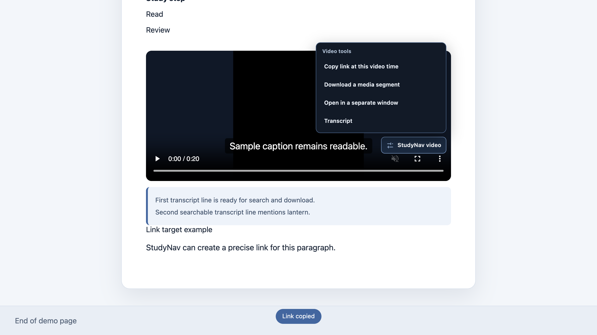

Android: Firefox
Install Firefox for Android, then use the signed StudyNav link that will appear here after Mozilla accepts it. Chrome, Edge, and Brave on Android are not the planned installation route.
Desktop Chromium browsers · version 1.6.0 · English + Russian
Highlight a thought, keep a note beside the text, copy one verse or a verse range, download a short audio or video segment, and fix common player annoyances. Your study data stays in your browser.
Android, iPhone, and iPad
The mobile version keeps nine touch-friendly study and sharing tools. It leaves out the heavier media and page-layout tools that are difficult to make reliable on a phone.
Install Firefox for Android, then use the signed StudyNav link that will appear here after Mozilla accepts it. Chrome, Edge, and Brave on Android are not the planned installation route.
Install the StudyNav app from TestFlight, enable its Safari extension, and allow it only on JW.org and WOL. The TestFlight link will appear here after Apple accepts the beta build.
Six highlight colors, notes and tags, saved places, citations, QR codes, clean copy, exact paragraph or verse links, image descriptions, and the available-language count.
Verse audio, audio/video clipping, player and transcript controls, image downloads, search, and page-layout changes remain in the desktop extension. Mobile study data stays in that browser on the device.
No ZIP or Developer mode will be required. Install buttons will appear only after the signed Mozilla and TestFlight links have been opened and verified. Follow the current evidence in Issue #10.
StudyNav 1.6.0
If you used an earlier version, start with these controls. All 23 settings and their current defaults are listed below.

Open the notes example at full size
Open the media menu example at full sizeWhat you can do
The controls appear on the JW.org pages where they work.
Save the exact paragraph or verse you want to revisit for a meeting, talk, or personal study—not just the top of the page.
Use it when:you found something useful but cannot study it now.Copy the selected words, their reference, and a precise link in one action. It is ready to paste into a message or notes.
Use it when:you want the reader to see both the quote and its source.Select the first verse, choose Select several, then select the last. Copy the text, copy one link, or download the range as one audio file.
Use it when:one thought continues through verses 3–5.StudyNav opens the same publication through a JW.org address without the extra technical parts.
Use it when:you want a simple address to save or send.Save the narration of one verse or several consecutive verses. For other media, enter start and end times to save a short WAV or WebM clip.
Use it when:you need a short excerpt without trimming the full file yourself.Six Library-like colors, notes, and tags are stored locally. On wide screens, notes appear in a right rail; on narrow screens, a Notes button opens them.
Use it when:you want the note visible without moving or covering the article.Page appearance
Article appearance changes start off. Turn on the ones you want in StudyNav settings.
The article title and buttons stay reachable during a long scroll on JW.org. WOL already keeps its own header visible, so this setting leaves it alone.
Article text receives more space on wide JW.org and WOL pages. Dialogs, navigation, and the notes rail keep their own size.
| Before | Separated |
|---|---|
| Row one | Row one |
| Row two | Row two |
Spacing, borders, and alternating backgrounds make it easier to follow each row.
JW Player’s dark edge gradient is removed when controls appear. Buttons remain visible, but the picture no longer darkens around them.
Video guide
Open the chapter list below the video to jump directly to one of the 23 settings. The current note and media buttons are shown in the version 1.6 guide above.
All features
For new users, image downloads and the three article-layout changes start off. If you installed StudyNav before, press Reset recommended defaults to use the same set.
No feature matches that search.
| Feature | What happens | Default |
|---|---|---|
| Highlights, notes, and tags | Highlight a thought, then click that highlight to write or change its note in the right rail. Comma or Enter saves each tag as a chip; Edit and Delete are visible beside the note. | On |
| Return to a saved place | Press Save place beside a paragraph or verse. Later, open that entry in the StudyNav library to return directly to it. | On |
| Quote with its source | Copy the selected text, publication title, and link to that exact place in one action. The result is ready to paste into a message or notes. | On |
| QR code for another device | Show a QR code for the current page or selected place, then scan it with your phone. | On |
| Short link to the same publication | Open the same publication through a JW.org address without extra technical parts. The shorter address is easier to save or send. | On |
| Feature | What happens | Default |
|---|---|---|
| Audio for one or several verses | Select one verse or several consecutive verses and press Download audio. StudyNav saves the selected narration as one WAV file on English, Russian, and Ukrainian Bible pages. | On |
| Copy only the verse words | The copied result keeps the verse words. The verse number, reference letters, footnote links, and StudyNav buttons are left out. | On |
| Link to the exact place | Copy a link that opens the chosen paragraph, one verse, or several consecutive verses instead of only the top of the page. | On |
| Find a publication by its code | If you already know a publication code or document number, open the regular JW.org and WOL search for it. This is not semantic or AI search. | On |
| Show an image description | Open the caption and text description that the page authors provided for a full article image. Compact publication previews are left unchanged. | On |
| Download an article image | A regular Download image button appears below suitable full images in an article, not over small publication previews. | Off |
| See how many languages are available | The language control shows the exact number of translations available for the current page. | On |
| Feature | What happens | Default |
|---|---|---|
| Article navigation while scrolling | On JW.org, the article title and navigation buttons stay at the top during a long scroll. WOL already pins its own header, so this setting does not move it. | Off |
| Wider text column | On wide JW.org and WOL article pages, more text fits on each line. Navigation, dialogs, and the notes rail do not stretch. | Off |
| Separate table rows | JW.org and WOL article tables gain spacing, borders, and alternating row backgrounds so your eye is less likely to jump between cells. | Off |
| Feature | What happens | Default |
|---|---|---|
| Keep video bright on hover | When you move the pointer over a video and the player buttons appear, the picture no longer darkens around the edges. The player buttons still hide after you stop moving the pointer. | On |
| Make subtitles larger | Player captions become larger and higher-contrast so they are easier to read. | On |
| Control the player from the keyboard | Space or K pauses and resumes; J and L seek; M mutes; F enters full screen. When the cursor is in a text field, the keys type normally. | On |
| Copy a link at the current time | Open the compact StudyNav menu on an audio or video player and copy the page address with a line such as Time: 2:14. This action appears only beside media. | On |
| Download a segment by time | Enter a start and end time in the player menu. Save up to five minutes of audio as one WAV file or three minutes of video as one WebM file. | On |
| Return to where you stopped | StudyNav remembers where you stopped a video. Next time, open StudyNav on the player and press Resume to return to that point. | On |
| Open the player in a separate window | The original player pauses and the new window continues at the same point. If the browser blocks autoplay, press Play once in the new window. | On |
| Open Transcript | The video menu always keeps Transcript visible. It searches and downloads captions when the page provides them, or clearly says that no transcript is available. | On |
Computer installation
No ZIP, commands, or Developer mode are needed. Use a computer with Chrome or a compatible Chromium browser; this desktop listing does not install the separate mobile beta.
Used the older ZIP version? Export your Study library JSON before switching. Install the Store version, import the JSON there, check your notes, and only then disable the unpacked copy. Contributors can build the current source from the GitHub repository; most people should use the Store.
Data
Questions
Compatibility, audio, notes, links, and common limitations.
The available desktop release supports current Google Chrome, Microsoft Edge, and compatible Chromium browsers on a computer. The separate mobile beta is being prepared for Firefox on Android and Safari on iPhone/iPad; it is not installable yet. Desktop Firefox and Safari packages are not offered.
No. It is an independent open-source project and is not produced, endorsed, or maintained by Jehovah’s Witnesses.
No. It is for cases where you already know a publication code or document number, and opens the regular JW.org/WOL search for it. It does not search by the meaning of the text.
Select verse 3, choose Select several, then select verse 5. Copy uses all three verses, Link creates one direct address, and Download audio saves the range as one WAV file. Shift-click still works as a keyboard shortcut.
Verse numbers, reference letters, footnote links, and StudyNav labels or buttons. It keeps the actual words of the selected verse or paragraph.
Up to 10,000 characters in one saved highlight. This is enough for a long excerpt while preventing an accidental whole-page selection from becoming one oversized note.
Image buttons, scrolling navigation, the wider column, and table styling need an article, image, or table to change. On WOL, wider text and clearer tables work in articles; its header is already fixed by the site.
Open the StudyNav menu beside a video. Transcript now remains visible there. It searches and downloads captions supplied by the page, or tells you that none are available. StudyNav does not send audio to a transcription service.
Yes. On supported English, Russian, and Ukrainian Bible chapter pages, you can download one verse or several consecutive verses. If the chapter media has not loaded yet, start Play Audio once and try again.
The browser can create these formats without sending media to a server. The current limits are five minutes for audio and three minutes for video; the guard prevents a tab from using excessive memory, and video is recorded locally in real time.
Click its colored highlight or use Edit in the right notes rail. The same rail contains Save, Delete, and Cancel. While typing tags, comma or Enter turns the finished word into a chip.
Older saved settings can outlive new defaults. New installs start with it off. Press Reset recommended defaults in the popup to apply the current defaults to an existing profile.
There is no remote sync. Export the Study library JSON from one browser profile and import it into another. Import merges valid records and does not delete existing ones.
The Chrome Web Store version updates automatically. If you are moving from an older manually loaded ZIP, export a JSON backup from its Study library, install the Store version, and import the JSON into that copy. Check the notes before disabling the old extension; each copy has separate local storage.
Not yet. StudyNav 1.6.1 has passed iPhone/iPad simulator checks and a full Firefox check on Android 16, but ordinary installation still needs signed provider links. Android will use Firefox; iPhone and iPad will use Safari through TestFlight. Until those links appear in the mobile beta section, use the desktop release.